29 Comparing Cluster Analysis and Latent Profile Analysis (B. J. Yik,* Y. Zhang, K. Nylund-Gibson, M. Ing, L. Krawiec, J. D. Houck, & E. D. Nacsa, 2026)
library(tidyverse)
library(haven)
library(glue)
library(MplusAutomation)
library(rhdf5)
library(here)
library(janitor)
library(semPlot)
library(reshape2)
library(cowplot)
library(filesstrings)
library(hrbrthemes)
library(sjPlot)
library(dplyr)
library(naniar)
library(gt)
library(tidyLPA)
#library(pisaUSA15)
library(patchwork)
library(RcppAlgos)
library(DiagrammeR)
library(data.table)
library(poLCA)
library(cluster)
library(factoextra)
library(datasets)
library(Hmisc)
library(car)Proposed model applied in current study
grViz(" digraph lca_model {
# The `graph` statement - No editing needed
graph [layout = dot, overlap = true]
# Two `node` statements
# One for measured variables (box)
node [shape=box]
Attitudes [label = <Attitudes toward <br/>chemistry>]
Motivation
Effort [label = <Effort Beliefs>]
Efficacy [label = <Self-efficacy>]
Concept [label = <Self-concept>]
Grading [label = <Grading Scheme>]
Exam [label = <ACS Exam Score>];
# One for latent variables (circle)
node [shape=circle]
dispositions [label=<Student <br/>Affects <br/>C<sub>k=3</sub>>];
# `edge` statements
edge [minlen = 2]
dispositions -> {Attitudes Motivation Effort Efficacy Concept}
dispositions -> Exam [minlen = 4];
Grading -> dispositions [minlen = 4];
Grading -> Exam;
{rank = same; Grading; dispositions; Exam}
#{rank = source; Attitudes; Motivation; Effort; Efficacy; Concept}
}") load the dataset
handling missing data
#any(is.na(pre))
pre_clean <- pre %>% drop_na()
any(is.na(pre_clean))
#> [1] FALSE
#we also cleaned out this few datapoint, since we previously included race as an auxiliary variable, but deleted after; but we did not change the sample for LPA. only 6 sample was deleted due to this step
pre_clean <- pre_clean %>%
filter(!Gender %in% c("I am gender nonconforming,I am genderqueer or genderfluid", "My gender or gender identity is best described as:", "I am gender nonconforming", "I prefer not to disclose my gender or gender identity", "I am genderqueer or genderfluid", "I am nonbinary" ))view data
recode
calculate means for each scale
pre_clean <- pre_clean %>%
mutate(ASCI_IA = rowMeans(across(c(ASCI1:ASCI8)), na.rm = TRUE)) %>%
mutate(AMSC = rowMeans(across(c(AMSC01:AMSC28)), na.rm = TRUE)) %>%
mutate(EB = rowMeans(across(c(EBN1:EBP4)), na.rm = TRUE)) %>%
mutate(MSLQ = rowMeans(across(c(MSLQ05:MSLQ31)), na.rm = TRUE)) %>%
mutate(CSC = rowMeans(across(c(CSC24:CSC08)), na.rm = TRUE))
#update the data preview
sjPlot::view_df(pre_clean)| ID | Name | Label | Values | Value Labels |
|---|---|---|---|---|
| 1 | ID | <output omitted> | ||
| 2 | grading | range: 0-1 | ||
| 3 | exam | range: 34-100 | ||
| 4 | mark | <output omitted> | ||
| 5 | ASCI1 | range: 2-7 | ||
| 6 | ASCI2 | range: 1-7 | ||
| 7 | ASCI3 | range: 1-7 | ||
| 8 | ASCI4 | range: 1-7 | ||
| 9 | ASCI5 | range: 1-7 | ||
| 10 | ASCI6 | range: 1-7 | ||
| 11 | ASCI7 | range: 1-7 | ||
| 12 | ASCI8 | range: 1-7 | ||
| 13 | AMSC01 | range: 1-5 | ||
| 14 | AMSC02 | range: 1-5 | ||
| 15 | AMSC03 | range: 1-5 | ||
| 16 | AMSC04 | range: 1-5 | ||
| 17 | AMSC05 | range: 1-5 | ||
| 18 | AMSC06 | range: 1-5 | ||
| 19 | AMSC07 | range: 1-5 | ||
| 20 | AMSC08 | range: 1-5 | ||
| 21 | AMSC09 | range: 1-5 | ||
| 22 | AMSC10 | range: 1-5 | ||
| 23 | AMSC11 | range: 1-5 | ||
| 24 | AMSC12 | range: 1-5 | ||
| 25 | AMSC13 | range: 1-5 | ||
| 26 | AMSC14 | range: 1-5 | ||
| 27 | AMSC15 | range: 1-5 | ||
| 28 | AMSC16 | range: 1-5 | ||
| 29 | AMSC17 | range: 1-5 | ||
| 30 | AMSC18 | range: 1-5 | ||
| 31 | AMSC19 | range: 1-5 | ||
| 32 | AMSC20 | range: 1-5 | ||
| 33 | AMSC21 | range: 1-5 | ||
| 34 | AMSC22 | range: 1-5 | ||
| 35 | AMSC23 | range: 1-5 | ||
| 36 | AMSC24 | range: 1-5 | ||
| 37 | AMSC25 | range: 1-5 | ||
| 38 | AMSC26 | range: 1-5 | ||
| 39 | AMSC27 | range: 1-5 | ||
| 40 | AMSC28 | range: 1-5 | ||
| 41 | EBN1 | range: 1-5 | ||
| 42 | EBN2 | range: 1-5 | ||
| 43 | EBN3 | range: 1-5 | ||
| 44 | EBN4 | range: 1-5 | ||
| 45 | EBN5 | range: 1-5 | ||
| 46 | EBP1 | range: 1-5 | ||
| 47 | EBP2 | range: 1-5 | ||
| 48 | EBP3 | range: 1-5 | ||
| 49 | EBP4 | range: 1-5 | ||
| 50 | MSLQ05 | range: 1-5 | ||
| 51 | MSLQ06 | range: 1-5 | ||
| 52 | MSLQ12 | range: 1-5 | ||
| 53 | MSLQ15 | range: 1-5 | ||
| 54 | MSLQ20 | range: 1-5 | ||
| 55 | MSLQ21 | range: 1-5 | ||
| 56 | MSLQ29 | range: 1-5 | ||
| 57 | MSLQ31 | range: 1-5 | ||
| 58 | CSC24 | range: 1-5 | ||
| 59 | CSC28 | range: 1-5 | ||
| 60 | CSC20 | range: 1-5 | ||
| 61 | CSC36 | range: 1-5 | ||
| 62 | CSC16 | range: 1-5 | ||
| 63 | CSC40 | range: 1-5 | ||
| 64 | CSC04 | range: 1-5 | ||
| 65 | CSC12 | range: 1-5 | ||
| 66 | CSC32 | range: 1-5 | ||
| 67 | CSC08 | range: 1-5 | ||
| 68 | Age | range: 18-25 | ||
| 69 | Major | <output omitted> | ||
| 70 | Year | <output omitted> | ||
| 71 | Year_6_TEXT | |||
| 72 | Credits. | <output omitted> | ||
| 73 | Work | <output omitted> | ||
| 74 | FirstGen | <output omitted> | ||
| 75 | Gender | <output omitted> | ||
| 76 | Gender.1 | <output omitted> | ||
| 77 | Race | <output omitted> | ||
| 78 | Race._8_TEXT | |||
| 79 | ASCI_IA | range: 2.1-5.8 | ||
| 80 | AMSC | range: 1.6-4.3 | ||
| 81 | EB | range: 1.0-4.3 | ||
| 82 | MSLQ | range: 1.0-5.0 | ||
| 83 | CSC | range: 1.8-4.8 | ||
standardize the variables (z-score)
pre_clean <- pre_clean %>%
mutate(across(all_of(c("ASCI_IA", "AMSC", "EB", "MSLQ", "CSC")), ~ scale(.)[,1], .names = "z_{.col}"))double check all indicators are standardized
ds <- pre_clean %>%
pivot_longer(z_ASCI_IA:z_CSC, names_to = "variable") %>%
group_by(variable) %>%
summarise(mean = mean(value, na.rm = TRUE), sd = sd(value, na.rm = TRUE))
ds %>%
gt() %>%
tab_header(title = md("**Descriptive Summary**")) %>%
cols_label(variable = "Variable", mean = md("M"), sd = md("SD")) %>%
fmt_number(c(2:3), decimals = 2) %>%
cols_align(align = "center", columns = mean)| Descriptive Summary | ||
| Variable | M | SD |
|---|---|---|
| z_AMSC | 0.00 | 1.00 |
| z_ASCI_IA | 0.00 | 1.00 |
| z_CSC | 0.00 | 1.00 |
| z_EB | 0.00 | 1.00 |
| z_MSLQ | 0.00 | 1.00 |
data_long <- pre_clean %>%
pivot_longer(z_ASCI_IA:z_CSC, names_to = "variable")
ggplot(data_long, aes(x = value)) + geom_histogram(binwidth = 0.3, fill = "#69b3a2",
color = "black") + facet_wrap(~variable, scales = "free_x") + labs(title = "Histograms of Variables",
x = "Value", y = "Frequency") + theme_cowplot()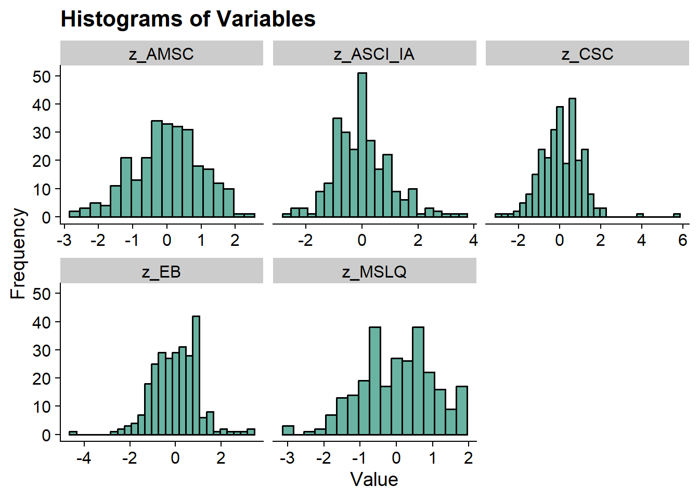
correlations
df_cor <- pre_clean %>%
dplyr::select(z_ASCI_IA, z_AMSC, z_EB, z_MSLQ, z_CSC, grading, exam)
cor_matrix <- cor(df_cor, use = "pairwise.complete.obs")
print(cor_matrix)
#> z_ASCI_IA z_AMSC z_EB z_MSLQ
#> z_ASCI_IA 1.00000000 -0.27197825 0.14356191 -0.1530685
#> z_AMSC -0.27197825 1.00000000 0.01863942 0.2160171
#> z_EB 0.14356191 0.01863942 1.00000000 -0.3713385
#> z_MSLQ -0.15306849 0.21601714 -0.37133853 1.0000000
#> z_CSC 0.10072946 0.16121343 0.33859758 -0.1155573
#> grading 0.05509749 -0.08774336 0.07088039 0.1083377
#> exam -0.15544345 0.02709785 -0.21220105 0.3720302
#> z_CSC grading exam
#> z_ASCI_IA 0.10072946 0.05509749 -0.15544345
#> z_AMSC 0.16121343 -0.08774336 0.02709785
#> z_EB 0.33859758 0.07088039 -0.21220105
#> z_MSLQ -0.11555730 0.10833767 0.37203022
#> z_CSC 1.00000000 0.11970707 -0.02177322
#> grading 0.11970707 1.00000000 0.11708381
#> exam -0.02177322 0.11708381 1.00000000
cor_result <- rcorr(as.matrix(df_cor))
formatted_p <- formatC(cor_result$P, format = "f", digits = 2)
dim(formatted_p) <- dim(cor_result$P)
rownames(formatted_p) <- colnames(formatted_p) <- colnames(df_cor)
print(formatted_p, quote = FALSE)
#> z_ASCI_IA z_AMSC z_EB z_MSLQ z_CSC grading exam
#> z_ASCI_IA NA 0.00 0.02 0.01 0.10 0.37 0.01
#> z_AMSC 0.00 NA 0.76 0.00 0.01 0.15 0.66
#> z_EB 0.02 0.76 NA 0.00 0.00 0.25 0.00
#> z_MSLQ 0.01 0.00 0.00 NA 0.06 0.08 0.00
#> z_CSC 0.10 0.01 0.00 0.06 NA 0.05 0.72
#> grading 0.37 0.15 0.25 0.08 0.05 NA 0.06
#> exam 0.01 0.66 0.00 0.00 0.72 0.06 NArun LPA model
# Run LPA models (no need to run it everytime)
lpa_fit <- pre_clean %>%
dplyr::select(z_ASCI_IA, z_AMSC, z_EB, z_MSLQ, z_CSC) %>%
estimate_profiles(1:6, package = "MplusAutomation", ANALYSIS = "starts = 500 100;",
OUTPUT = "sampstat residual tech11 tech14", variances = c("equal", "varying",
"equal", "varying"), covariances = c("zero", "zero",
"equal", "varying"), keepfiles = TRUE)
#compare fit statistics
get_fit(lpa_fit)
# Move files to folder
files <- list.files(here(), pattern = "^model")
move_files(files, here("33-k-means", "new"), overwrite = TRUE)
source(here("33-k-means", "functions", "enum_table_lpa.r")) #file in the folder
# Read in model
output_pisa <- readModels(here("33-k-means", "new"), quiet = TRUE)
# Preview with numbered rows
enum_fit(output_pisa)model fit summary table (this is the old version table, still working on the new one; the new one will include smallest profile)
select_models <-LatexSummaryTable(output_pisa,
keepCols=c("Title", "Parameters", "LL", "BIC", "aBIC",
"BLRT_PValue", "T11_VLMR_PValue","Observations"))
enum_table(select_models, 1:6, 7:12, 13:18, 19:23)second round comparison among different profiles
# CmpK recalculation:
enum_fit1 <- select_models
stage2_cmpk <- enum_fit1 %>%
slice(2, 3, 6, 8, 12, 16, 20, 22) %>% # Change this to select the rows of the candidate models
mutate(CAIC = -2 * LL + Parameters * (log(Observations) + 1)) %>%
mutate(AWE = -2 * LL + 2 * Parameters * (log(Observations) + 1.5)) %>%
mutate(SIC = -.5 * BIC,
expSIC = exp(SIC - max(SIC)),
cmPk = expSIC / sum(expSIC),
BF = exp(SIC - lead(SIC))) %>%
dplyr::select(Title, Parameters, BIC, aBIC, CAIC, AWE, cmPk, BF) %>%
mutate(Title = str_to_title(Title))
# Format Fit Table
stage2_cmpk %>%
gt() %>%
tab_options(column_labels.font.weight = "bold") %>%
fmt_number(
7,
decimals = 2,
drop_trailing_zeros = TRUE,
suffixing = TRUE
) %>%
fmt_number(c(3:6),
decimals = 2) %>%
fmt_number(8,decimals = 2,
drop_trailing_zeros=TRUE,
suffixing = TRUE) %>%
fmt(8, fns = function(x)
ifelse(x>100, ">100",
scales::number(x, accuracy = .1))) %>%
tab_style(
style = list(
cell_text(weight = "bold")
),
locations = list(cells_body(
columns = BIC,
row = BIC == min(BIC[1:nrow(stage2_cmpk)])
),
cells_body(
columns = aBIC,
row = aBIC == min(aBIC[1:nrow(stage2_cmpk)])
),
cells_body(
columns = CAIC,
row = CAIC == min(CAIC[1:nrow(stage2_cmpk)])
),
cells_body(
columns = AWE,
row = AWE == min(AWE[1:nrow(stage2_cmpk)])
),
cells_body(
columns = cmPk,
row = cmPk == max(cmPk[1:nrow(stage2_cmpk)])
),
cells_body(
columns = BF,
row = BF > 10)
)
)| Title | Parameters | BIC | aBIC | CAIC | AWE | cmPk | BF |
|---|---|---|---|---|---|---|---|
| Model 1 With 2 Classes | 16 | 3,820.72 | 3,769.99 | 3,836.72 | 3,958.24 | NA | 0.2 |
| Model 1 With 3 Classes | 22 | 3,817.02 | 3,747.27 | 3,839.02 | 4,006.11 | NA | >100 |
| Model 1 With 6 Classes | 40 | 3,842.50 | 3,715.68 | 3,882.50 | 4,186.29 | NA | 0.0 |
| Model 2 With 2 Classes | 21 | 3,831.49 | 3,764.91 | 3,852.49 | 4,011.98 | NA | >100 |
| Model 2 With 6 Classes | 65 | 3,922.35 | 3,716.26 | 3,987.35 | 4,481.01 | NA | 0.0 |
| Model 3 With 4 Classes | 38 | 3,817.99 | 3,697.51 | 3,855.99 | 4,144.59 | NA | 0.9 |
| Model 6 With 2 Classes | 41 | 3,817.80 | 3,687.80 | 3,858.80 | 4,170.18 | NA | NA |
| Model 6 With 4 Classes | NA | NA | NA | NA | NA | NA | NA |
Comparing two profiles
a <- plotMixtures(output_pisa$model_2_class_2.out, ci = 0.95, bw = FALSE)
b <- plotMixtures(output_pisa$model_6_class_2.out, ci = 0.95, bw = FALSE)
a + labs(title = "Model 2 two-profile") + theme(plot.title = element_text(size = 12)) + b + labs(title = "Model 4 two-profile") +
theme(plot.title = element_text(size = 12))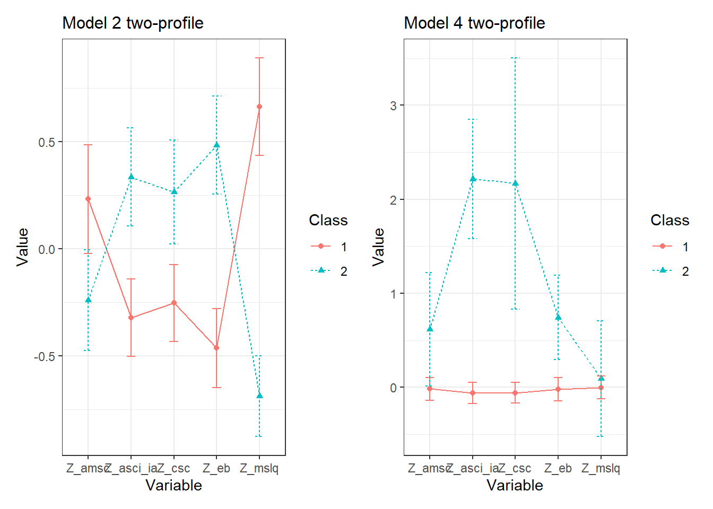
a initial look, not the final figure
source(here("33-k-means", "functions", "plot_lpa.R")) #file in the folder
plot_lpa(model_name = output_pisa$model_2_class_2.out)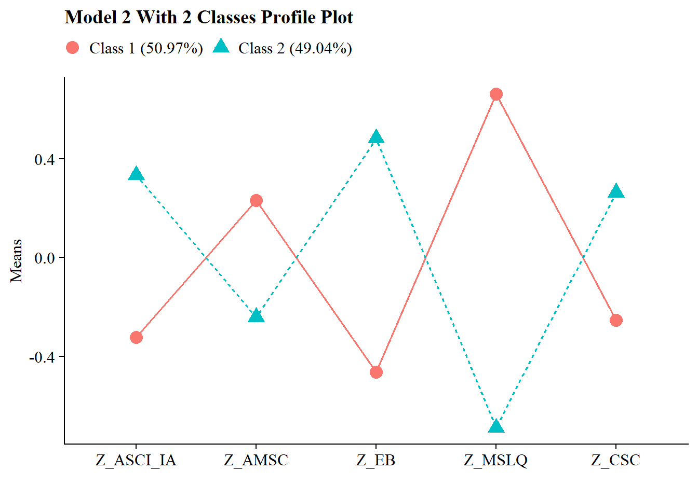
another version: this one changed the color of two profiles and the variable names (all labels)
plot_lpa <- function(model_name) {
# Extract and reshape mean estimates by class
pp_plots <- data.frame(model_name$parameters$unstandardized) %>%
mutate(LatentClass = sub("^", "Class ", LatentClass)) %>%
filter(paramHeader == "Means") %>%
filter(LatentClass != "Class Categorical.Latent.Variables") %>%
dplyr::select(est, LatentClass, param) %>%
pivot_wider(names_from = LatentClass, values_from = est) %>%
relocate(param, .after = last_col())
# Extract class proportions
c_size <- as.data.frame(model_name$class_counts$modelEstimated$proportion) %>%
dplyr::rename("cs" = 1) %>%
mutate(cs = round(cs * 100, 2))
# Rename class labels with proportions
# Keep class labels without proportions
colnames(pp_plots) <- c("Motivated but Unconfident", "Confident but Disengaged", "param")
# Melt data into long format
plot_data <- pp_plots %>%
dplyr::rename("param" = ncol(pp_plots)) %>%
reshape2::melt(id.vars = "param") %>%
mutate(
param = factor(param,
levels = c("Z_AMSC", "Z_ASCI_IA", "Z_CSC", "Z_EB", "Z_MSLQ"),
labels = c("Motivation", "Attitudes", "Self-concept", "Effort beliefs", "Self-efficacy")),
variable = factor(variable)
)
# Title
name <- str_to_title(model_name$input$title)
# Define color palette (can customize further)
#class_colors <- c("#1b1b1b", "#595959", "#a6a6a6", "#d9d9d9") # Extend if >2 classes
class_colors <- c("#F8766D", "#00BFC4")
# Plot
p <- plot_data %>%
ggplot(
aes(
x = param,
y = value,
shape = variable,
colour = variable,
lty = variable,
group = variable
)
) +
geom_point(size = 4) +
geom_line() +
scale_x_discrete("") +
scale_color_manual(values = class_colors[1:nlevels(plot_data$variable)]) + # custom colors
labs(title = glue("{name} Profile Plot"), y = "Means") +
theme_cowplot() +
theme(
text = element_text(family = "serif", size = 12),
legend.key.width = unit(.5, "line"),
legend.text = element_text(family = "serif", size = 12),
legend.title = element_blank(),
legend.position = "top"
)
return(p)
}
plot_lpa(model_name = output_pisa$model_2_class_2.out)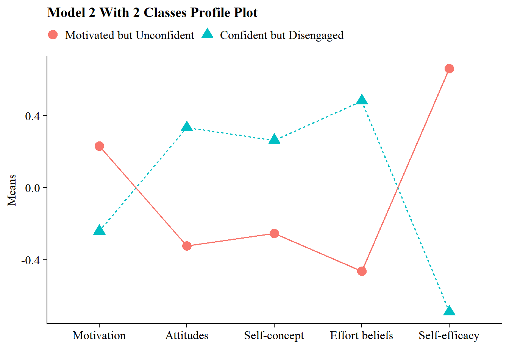
Final figure
plot_lpa <- function(model_name) {
# Extract and reshape mean estimates by class
pp_plots <- data.frame(model_name$parameters$unstandardized) %>%
mutate(LatentClass = sub("^", "Class ", LatentClass)) %>%
filter(paramHeader == "Means") %>%
filter(LatentClass != "Class Categorical.Latent.Variables") %>%
dplyr::select(est, LatentClass, param) %>%
pivot_wider(names_from = LatentClass, values_from = est) %>%
relocate(param, .after = last_col())
# Extract class proportions
c_size <- as.data.frame(model_name$class_counts$modelEstimated$proportion) %>%
dplyr::rename("cs" = 1) %>%
mutate(cs = round(cs * 100, 2))
# Rename class labels with proportions
# Keep class labels without proportions
colnames(pp_plots) <- c("Motivated but Unconfident", "Confident but Disengaged", "param")
# Melt data into long format
plot_data <- pp_plots %>%
dplyr::rename("param" = ncol(pp_plots)) %>%
reshape2::melt(id.vars = "param") %>%
mutate(
param = factor(param,
levels = c("Z_AMSC", "Z_ASCI_IA", "Z_CSC", "Z_EB", "Z_MSLQ"),
labels = c("Chemistry\nmotivation", "Chemistry\nattitudes", "Chemistry\nself-concept", "Effort beliefs", "Self-efficacy")),
variable = factor(variable)
)
# Title
name <- str_to_title(model_name$input$title)
# Define color palette (can customize further)
#class_colors <- c("#1b1b1b", "#595959", "#a6a6a6", "#d9d9d9") # Extend if >2 classes
class_colors <- c("#F8766D", "#005B96") # red and dark blue
# Plot
p <- plot_data %>%
ggplot(
aes(
x = param,
y = value,
shape = variable,
colour = variable,
lty = variable,
group = variable
)
) +
geom_line(linewidth = 1) +
geom_point(size = 4) +
scale_x_discrete("") +
scale_y_continuous(
limits = c(-0.8, 0.8),
breaks = c(-0.75, -0.5, -0.25, 0, 0.25, 0.5, 0.75)
) +
scale_color_manual(values = class_colors[1:nlevels(plot_data$variable)]) + # custom colors
#labs(title = glue("{name} Profile Plot"), y = "Standardized indicator means") +
labs(title = NULL, y = "Standardized indicator means") +
theme_cowplot() +
theme(
text = element_text(family = "sans", size = 12), # serif font
axis.text = element_text(family = "sans", size = 12), # axis labels
axis.title = element_text(family = "sans", size = 14), # axis labels
legend.text = element_text(family = "sans", size = 12), # legend text
legend.title = element_text(family = "sans", size = 14),
#legend.position = "top",
legend.position = "none",
panel.border = element_rect(colour = "black", fill = NA, linewidth = 1),
axis.line = element_line(colour = "black", linewidth = 0.3)
)
return(p)
}
plot_lpa(model_name = output_pisa$model_2_class_2.out)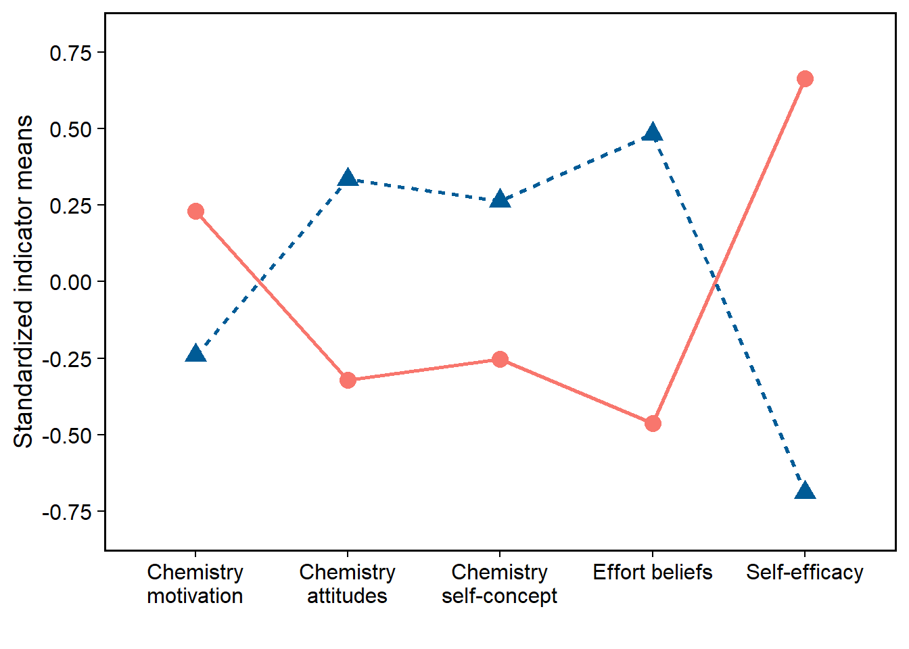
p <- plot_lpa(model_name = output_pisa$model_2_class_2.out)
ggsave("profile_plot.png", plot = p, width = 9, height = 5.6, units = "in", dpi = 600, bg = "white")Three step ML
lpa_result <- pre_clean %>%
dplyr::select(z_ASCI_IA, z_AMSC, z_EB, z_MSLQ, z_CSC) %>%
estimate_profiles(n_profiles = 2, model = 2) # Adjust the number of profiles as needed
t.test(exam ~ Class, data = classified_data, var.equal = TRUE)
#>
#> Two Sample t-test
#>
#> data: exam by Class
#> t = 5.0593, df = 267, p-value = 7.837e-07
#> alternative hypothesis: true difference in means between group 1 and group 2 is not equal to 0
#> 95 percent confidence interval:
#> 5.064922 11.518549
#> sample estimates:
#> mean in group 1 mean in group 2
#> 70.82609 62.53435
classified_data %>%
group_by(Class) %>%
summarise(
n = n(),
mean = mean(exam, na.rm = TRUE),
sd = sd(exam, na.rm = TRUE)
)
#> # A tibble: 2 × 4
#> Class n mean sd
#> <dbl> <int> <dbl> <dbl>
#> 1 1 138 70.8 13.3
#> 2 2 131 62.5 13.6wald test
lm_model <- lm(exam ~ Class, data = classified_data)
summary(lm_model)
#>
#> Call:
#> lm(formula = exam ~ Class, data = classified_data)
#>
#> Residuals:
#> Min 1Q Median 3Q Max
#> -30.826 -8.826 1.174 9.466 29.466
#>
#> Coefficients:
#> Estimate Std. Error t value Pr(>|t|)
#> (Intercept) 79.118 2.571 30.773 < 2e-16 ***
#> Class -8.292 1.639 -5.059 7.84e-07 ***
#> ---
#> Signif. codes:
#> 0 '***' 0.001 '**' 0.01 '*' 0.05 '.' 0.1 ' ' 1
#>
#> Residual standard error: 13.44 on 267 degrees of freedom
#> Multiple R-squared: 0.08748, Adjusted R-squared: 0.08406
#> F-statistic: 25.6 on 1 and 267 DF, p-value: 7.837e-07
Anova(lm_model, type = 3)
#> Anova Table (Type III tests)
#>
#> Response: exam
#> Sum Sq Df F value Pr(>F)
#> (Intercept) 170939 1 946.973 < 2.2e-16 ***
#> Class 4621 1 25.597 7.837e-07 ***
#> Residuals 48196 267
#> ---
#> Signif. codes:
#> 0 '***' 0.001 '**' 0.01 '*' 0.05 '.' 0.1 ' ' 1Kmeans
pre_clean <- pre_clean %>%
mutate(across(all_of(c("ASCI_IA", "AMSC", "EB", "MSLQ", "CSC")), ~ scale(.)[,1], .names = "z_{.col}"))
dfk <- pre_clean %>%
dplyr::select(z_ASCI_IA, z_AMSC, z_EB, z_MSLQ, z_CSC, exam, grading)
# Step 1: Select specific variables for clustering
dfk_selected <- dfk %>%
dplyr::select(z_AMSC, z_ASCI_IA, z_CSC, z_EB, z_MSLQ)
# Step 2: Scale the selected data
dfk_scaled <- scale(dfk_selected)
# Step 3: Set random seed for reproducibility
set.seed(123)
# Step 4: Run K-means for k = 2 to 10 and store total within-cluster sum of squares
wss <- numeric(9)
kmeans_results <- list()
for (k in 2:10) {
km <- kmeans(dfk_scaled, centers = k, nstart = 10, iter.max = 25)
wss[k - 1] <- km$tot.withinss
kmeans_results[[as.character(k)]] <- km
}
# Step 5: Plot Elbow Method to choose optimal k
plot(2:10, wss, type = "b", pch = 19,
xlab = "Number of Clusters (k)",
ylab = "Total Within-Cluster Sum of Squares",
main = "Elbow Method for Optimal k")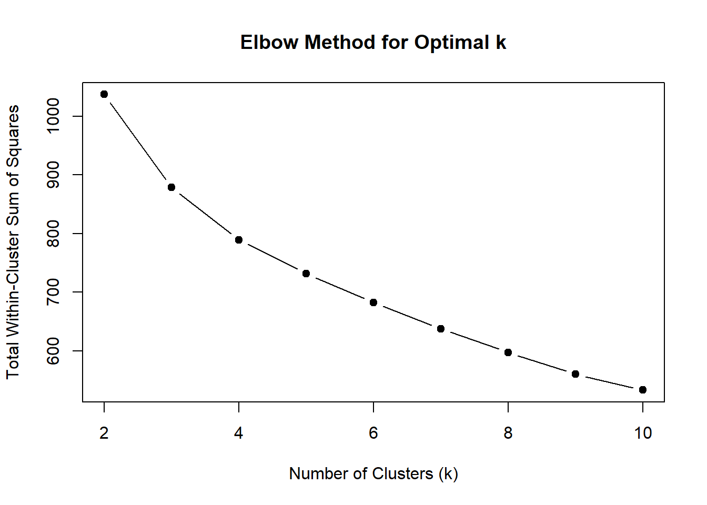
# Step 6: Assign cluster labels to the original selected data for chosen k
chosen_k <- 2
dfk_clustered <- dfk_selected %>%
mutate(Cluster = factor(kmeans_results[[as.character(chosen_k)]]$cluster))
# Step 7: Visualize the clusters using PCA
fviz_cluster(kmeans_results[[as.character(chosen_k)]], data = dfk_scaled,
geom = "point", ellipse.type = "convex",
main = paste("K-means Clustering (k =", chosen_k, ")"))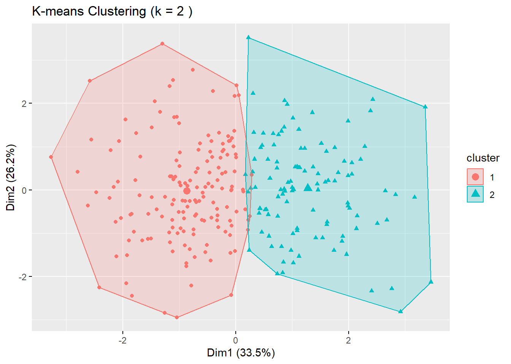
kmeans_results[["2"]]$size
#> [1] 160 109
fviz_nbclust(dfk_clustered, kmeans, method = "wss") #choose 3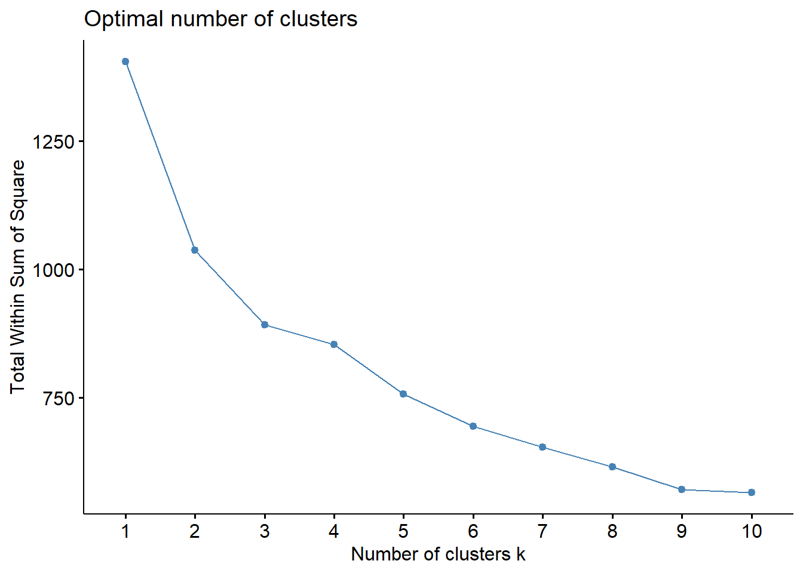
elbow plot
# Step 1: Add WSS for k = 1
# (Only if it wasn’t previously computed)
set.seed(123)
km1 <- kmeans(dfk_scaled, centers = 1, nstart = 10, iter.max = 25)
wss_full <- c(km1$tot.withinss, wss) # Add k=1 to the front
# Step 2: Recreate full dataframe
elbow_df <- data.frame(
k = 1:10,
wss = wss_full
)
# Step 3: Create the updated plot
plot.wss <- ggplot(elbow_df, aes(x = k, y = wss)) +
geom_line(color = "steelblue", linewidth = 1) +
geom_point(color = "steelblue", size = 3) +
scale_x_continuous(breaks = 1:10) +
scale_y_continuous(limits = c(400, 1400)) + # << Set y-axis range
labs(
x = expression("Number of clusters (" * italic(k) * ")"),
y = "Total Within Sum of Squares (WSS)"
) +
theme_minimal(base_size = 12) +
theme(
plot.title = element_blank(),
panel.grid.major = element_blank(),
panel.grid.minor = element_blank(),
panel.border = element_rect(color = "black", fill = NA, linewidth = 1),
axis.text = element_text(size = 12, color = "black"),
axis.title = element_text(size = 14, color = "black"),
axis.ticks.y = element_line(color = "black")
)
plot.wss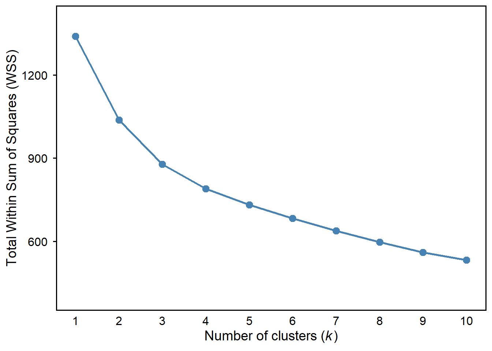
ggsave("cluster-wss.png", plot = plot.wss, width = 9, height = 5.6, units = "in", dpi = 600, bg = "white")
fviz_nbclust(dfk_clustered, kmeans, method = "silhouette") #choose 2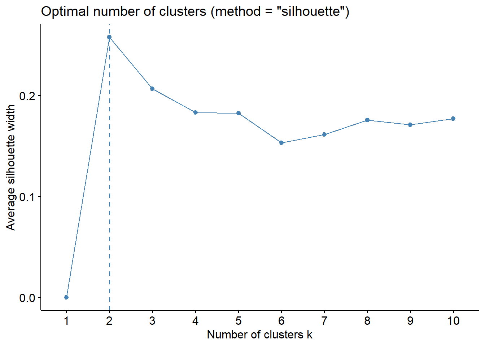
# Generate silhouette plot and customize it
plot.silhouette <- fviz_nbclust(dfk_clustered, kmeans, method = "silhouette") +
geom_line(color = "steelblue", linewidth = 3) +
geom_point(color = "steelblue", size = 3) +
labs(
x = expression("Number of clusters (" * italic(k) * ")"),
y = "Average silhouette width",
title = NULL
) +
scale_x_discrete() + # ← key fix here
scale_y_continuous(limits = c(0, 0.3)) +
theme_minimal(base_size = 12) +
theme(
panel.grid.major = element_blank(),
panel.grid.minor = element_blank(),
panel.border = element_rect(color = "black", fill = NA, linewidth = 1),
axis.text = element_text(size = 12, color = "black"),
axis.title = element_text(size = 14, color = "black"),
axis.ticks.y = element_line(color = "black")
)
plot.silhouette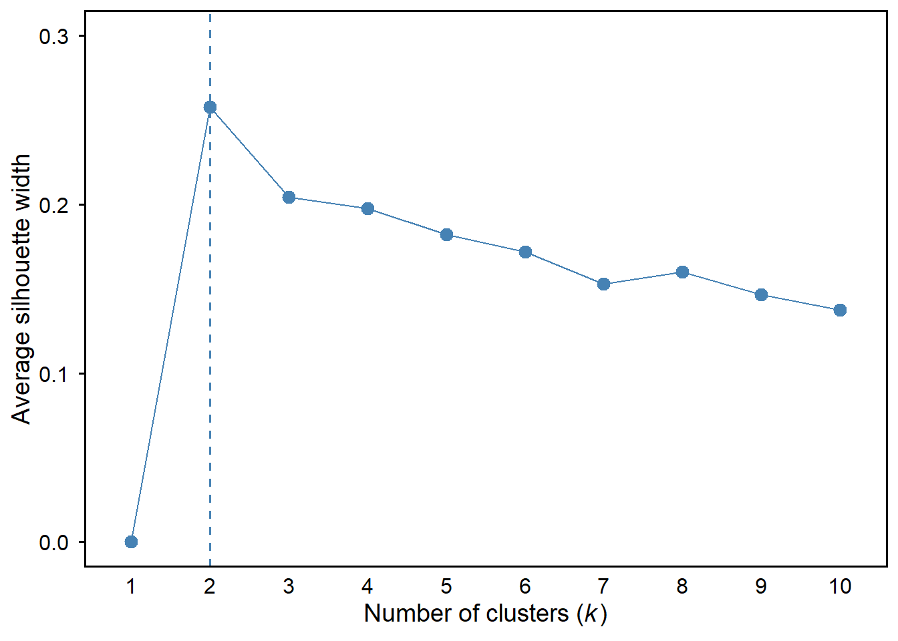
ggsave("silhouette.png", plot = plot.silhouette, width = 9, height = 5.6, units = "in", dpi = 600, bg = "white")
# Reshape the cluster centers data for plotting
long_data <- kmeans_results[["2"]]$centers %>%
as.data.frame() %>%
mutate(Cluster = factor(rownames(.))) %>%
pivot_longer(-Cluster, names_to = "Variable", values_to = "Mean")
long_data$Cluster <- dplyr::recode(long_data$Cluster,
"1" = "Motivated but Unconfident",
"2" = "Confident but Disengaged")
# Define readable labels for each variable
variable_labels <- c("z_AMSC" = "Motivation",
"z_ASCI_IA" = "Attitudes",
"z_CSC" = "Self-concept",
"z_EB" = "Effort beliefs",
"z_MSLQ" = "Self-efficacy")
# Plot the cluster profiles
ggplot(long_data, aes(x = Variable, y = Mean, group = Cluster, color = Cluster)) +
geom_line(linewidth = 1.2) +
geom_point(size = 3) +
theme_minimal() +
labs(title = "Cluster Profiles on Key Academic Variables",
y = "Cluster Mean (Z-score)",
x = NULL) +
scale_x_discrete(labels = variable_labels) +
theme(
axis.text.x = element_text(angle = 0, hjust = 0.5), # Horizontal text
plot.title = element_text(hjust = 0.5),
legend.position = "top",
legend.direction = "horizontal",
panel.grid.major = element_blank(), # remove major grid lines
panel.grid.minor = element_blank(), # remove minor grid lines
axis.line.x = element_line(color = "black"),
axis.line.y = element_line(color = "black")
)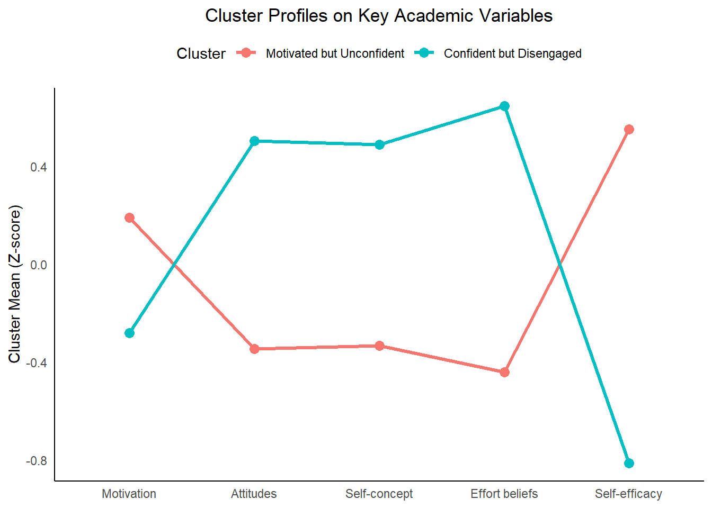
final cluster plot
# Define consistent color palette
cluster_colors <- c("Motivated but Unconfident" = "#F8766D",
"Confident but Disengaged" = "#005B96")
# Updated variable labels with line breaks
variable_labels <- c(
"z_AMSC" = "Chemistry\nmotivation",
"z_ASCI_IA" = "Chemistry\nattitudes",
"z_CSC" = "Chemistry\nself-concept",
"z_EB" = "Effort beliefs",
"z_MSLQ" = "Self-efficacy"
)
# Generate the plot
plot.cluster <- ggplot(long_data, aes(x = Variable, y = Mean, group = Cluster, color = Cluster, linetype = Cluster, shape = Cluster)) +
geom_line(linewidth = 1) +
geom_point(size = 4) +
scale_color_manual(values = cluster_colors) +
scale_x_discrete(labels = variable_labels) +
scale_y_continuous(
limits = c(-0.9, 0.9),
breaks = c(-0.75, -0.5, -0.25, 0, 0.25, 0.5, 0.75)
) +
labs(
#title = "Cluster Profiles on Key Academic Variables",
y = "Standardized indicator means",
x = NULL
) +
theme_classic(base_family = "sans") +
theme(
text = element_text(size = 12),
axis.text = element_text(size = 12, colour = "black"),
axis.title = element_text(size = 14),
legend.text = element_text(size = 12),
legend.title = element_blank(),
legend.position = "none", # or "top" if you want to keep it
panel.border = element_rect(colour = "black", fill = NA, linewidth = 0.8),
axis.line = element_line(colour = "black", linewidth = 0.3)
)
plot.cluster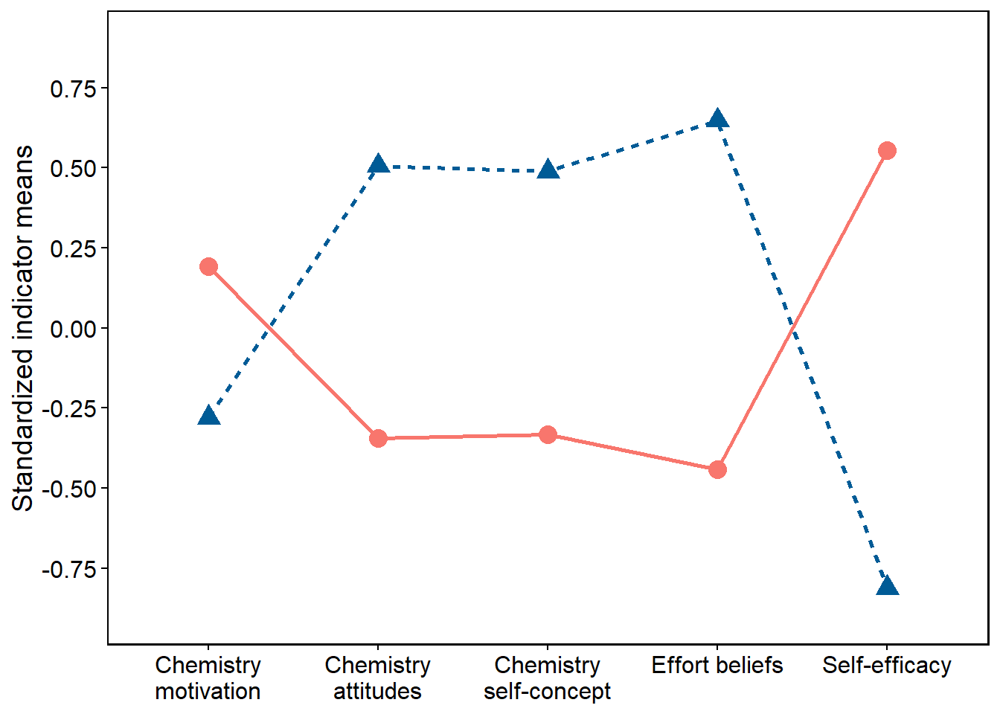
ggsave("cluster.png", plot = plot.cluster, width = 9, height = 5.6, units = "in", dpi = 600, bg = "white")auxiliary
dfk_clustered <- dfk %>%
dplyr::select(z_ASCI_IA, z_AMSC, z_EB, z_MSLQ, z_CSC, exam, grading) %>% # include your two auxiliary variables
drop_na() %>% # drop rows with missing values
mutate(Cluster = factor(kmeans_results[["2"]]$cluster))
# t-test for exam by Cluster (equal variances)
t.test(exam ~ Cluster, data = dfk_clustered, var.equal = TRUE)
#>
#> Two Sample t-test
#>
#> data: exam by Cluster
#> t = 4.664, df = 267, p-value = 4.906e-06
#> alternative hypothesis: true difference in means between group 1 and group 2 is not equal to 0
#> 95 percent confidence interval:
#> 4.52696 11.14116
#> sample estimates:
#> mean in group 1 mean in group 2
#> 69.96250 62.12844
# t-test for grading by Cluster (equal variances)
t.test(grading ~ Cluster, data = dfk_clustered, var.equal = TRUE)
#>
#> Two Sample t-test
#>
#> data: grading by Cluster
#> t = -0.70234, df = 267, p-value = 0.4831
#> alternative hypothesis: true difference in means between group 1 and group 2 is not equal to 0
#> 95 percent confidence interval:
#> -0.16508645 0.07827452
#> sample estimates:
#> mean in group 1 mean in group 2
#> 0.543750 0.587156
dfk_clustered %>%
group_by(Cluster) %>%
summarise(
Mean = mean(exam, na.rm = TRUE),
SD = sd(exam, na.rm = TRUE),
N = n()
)
#> # A tibble: 2 × 4
#> Cluster Mean SD N
#> <fct> <dbl> <dbl> <int>
#> 1 1 70.0 13.4 160
#> 2 2 62.1 13.7 109
tab <- df_combined %>%
count(Cluster, Class) %>%
group_by(Class) %>%
mutate(percent = round(100 * n / sum(n), 1)) %>%
ungroup()
tab <- tab %>%
group_by(Class) %>%
mutate(percent = round(100 * n / sum(n), 1)) %>%
ungroup()
print(names(tab))
#> [1] "Cluster" "Class" "n" "percent"
tab %>%
gt() %>%
tab_header(
title = "Contingency Table: K-means Cluster × LPA Class"
) %>%
cols_label(
Cluster = "K-means Cluster",
Class = "LPA Class",
n = "Count",
percent = "Percent (%)"
) %>%
fmt_number(columns = percent, decimals = 1)| Contingency Table: K-means Cluster × LPA Class | |||
| K-means Cluster | LPA Class | Count | Percent (%) |
|---|---|---|---|
| 1 | 1 | 137 | 99.3 |
| 1 | 2 | 23 | 17.6 |
| 2 | 1 | 1 | 0.7 |
| 2 | 2 | 108 | 82.4 |